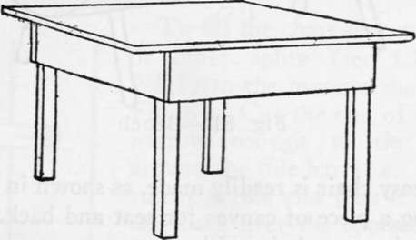
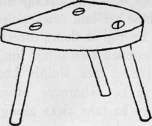
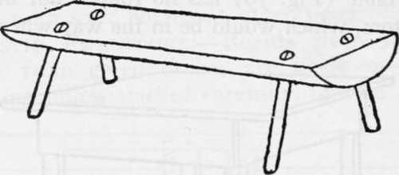
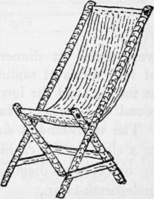
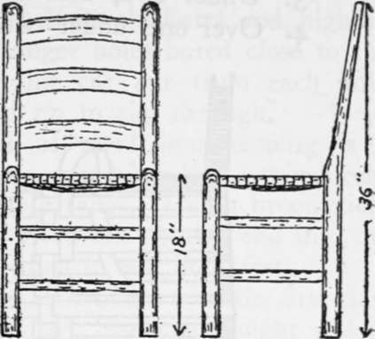
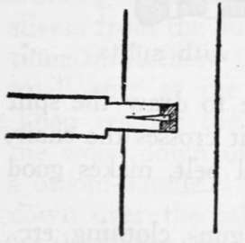
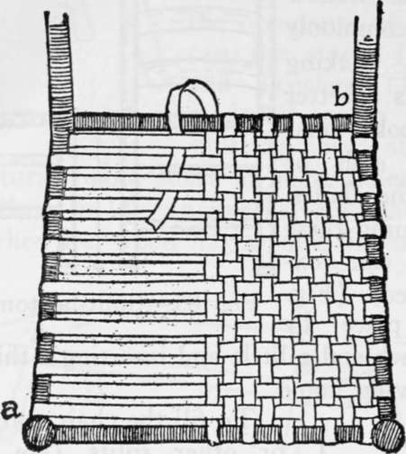
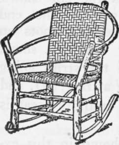

Cabin Building And Fitting Up. Part 5
Description
This section is from the book "Camping And Woodcraft", by Horace Kephart. Also available from Amazon: Camping and Woodcraft.
Cabin Building And Fitting Up. Part 5
Fig. 78. Pole bunk (for four men).
The bunk (Fig. 78), for four men, is made by running a pair of straight poles about 4^2 feet apart, from side to side of cabin, fitting the ends in the joints between wall logs, and supporting the middle on posts. Athwart these are laid small poles to support the mattresses and on top of them, directly over the large poles, are fastened two other long poles as guards. The mattresse? are simple bed ticks filled w7ith fine browse or whatever other soft stuff is available. It pays to take ticks along, as they hold the stuff in place and are easy to refill.
Double berths, one above the other, are nuisances in every way. Folding cots are more cleanly than any kind of fixed berths, and they can be carried out of the house to sun and air while the floor is being swept.
The table (Fig. 79) has no rounds nor braces at the bottom, which would be in the way when people were seated at dinner. The legs may be made of four pieces of sapling squared for nailing cleats at the top, and the lower parts may then be shaved round or tapered. Make the table 30 inches high.
Fig. 79. Table.
The washstand is simply a broad shelf attached to a cleat on the cabin wall and supported further by brackets or diagonal braces, leaving the space underneath clear.
Regular chairs should not be made until proper wood has been thoroughly seasoned for this purpose. If it is to be used with the bark on it must be cut in mid-winter. Meantime the occupants of the cabin can use stools (Fig. 80) and benches (Fig. 80 made of green wood by splitting out slabs and fitting natural round sticks in auger holes for legs, wedging these in like an axe helve so they can be refitted when the wood has shrunk in seasoning.
Fig. 80. Stool.
Fig. 81. Bench.
An easy chair is readily made, as shown in Fig. 82, by using a piece of canvas for seat and back.
Split-bottom chairs (Fig. 83) are particularly appropriate in a log cabin. Those common in the backwoods are generally made stumpy (only 16 inches high in front and 15 in the rear). It is better to make them 18 inches to top of seat, so they will be right for a 30-inch height of table. In making them you will need a drawing knife, a 24-in.
Fig. 82. Easy chair.
"bit and % -in. chisel to mortise slots for the three broad splits that connect the back posts (round sticks may be used instead of splits). A 60-cent hollow auger, commonly used for making tenons, is better than a spoke sizer to fit the ends of rounds to their holes. Besides gluing these ends, you can fox-wedge them (Fig. 84) in place by splitting each end a little and inserting a thin wedge before driving home.
To fill the chair seat, use oak or other splits (see Chapter XIII) in the manner shown in Fig. 85. Cut the end of a split narrow enough to tie easily around the side bar at a. Then run it across and pass it under and back over the opposite bar, and so on, as the cut shows. When you get to the end! of this split, tie another to it, keeping knots on under side of chair where they will not show. When the seat is filled up with the strips going* one way, fasten the end, beginning at rear (b), and run others crosswise, in and out, until the seat is finished.
Instead of the plain pattern shown in this example, it is better to weave a diagonal one similar to that in the back of the rocking chair (Fig. 86). To do this, run the strands as follows:
Fig. 83. Split-bottom chair.
Fig. 84. Fox-wedge.
1. Over two, under two, etc.
2. Under one, over two, under two, etc.
3. Under two, over two, etc.
4. Over one, under two, over two, etc.
Fig. 85. Bottoming chair with splits.
Repeat in above order. Be sure to draw the split as tightly as you can every time it crosses the chair.
Raw deerskin, or other animal pelt, makes good chair seats.
Racks for guns, clothing, etc., are easily provided by cutting crotches of small limbs and nailing them up in convenient places. Wooden pins set in auger holes in the walls may be used for similar purposes. If you have no auger, a hardwood pin can be driven into a softwood log by trimming its point wedge-shape and starting it in a nick made with the corner of the axe blade. Outside, under the projecting roof at a gable end, fix a rack on which full-rigged fishing rods may be stood during the day (of course, you will unjoinf them and take them in at night). This rack consists simply of a small shelf for the butts, and, high up a narrow shelf with auger holes bored close to the edge and a narrow slot cut out from each hole to the edge for a rod tip to slip through.
Fig. 86. Rustic rocker.
The first essential of good housekeeping is a broom. Tie together a round bundle of thin birch, willow, or other flexible twigs. Cut a broomstick, sharpen one end, and drive this pointed end into the. center of the bunch—then it will hold fast.
Some rainy day you can make a really first-class broom from birch splints. Select a straight yellow birch five inches in diameter and cut off a six-foot length. At about fourteen inches from the hip-end cut a ring around the bark about two inches wide. Peel off all the bark below that ring. Then, working with a sharp jackknife, split small flat slivers from the butt end up to the bark ring. Continue until there is nothing left of the butt save a small core at the top, and cut this off carefully. Then remove the bark above the ring and sliver the wood down until there is only enough left for a broom-handle. Tie this last lot of slivers tightly down over the others with a stout string. Trim off the slivers evenly. Then whittle off the handle, smooth it with glass, make a hole in its top and insert a hide loop to hang it up by. This is the famous splint broom of our foremothers, as described by Miss Earle in her Home Life in Colonial Days.
Don't crowd the cabin with decorations or "conveniences" that will be in the way and serve chiefly to collect dust and cobwebs. Let each and every article have a definite purpose, and show it by its perfect adaptability. The simplest contrivances generally are the best.
Continue to:
- prev: Cabin Building And Fitting Up. Part 4
- Table of Contents
- next: Chapter XV. Bark Utensils. Bast Ropes And Twine. Root And Vine Cordage. Withes And Splits